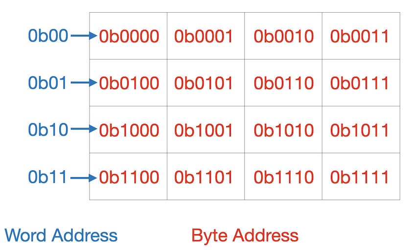

Lab 10: Virtual Memory
Deadline: Monday, April 25, 11:59:59 PM PT
Goals
- Explore the workings of virtual memory, specifically the TLB and the Page Table.
- Analyze TLB hit rate and Page Table hit rate and determine what accesses optimize these values.
Setup
You do not need to pull from the lab starter for Lab 10.
You will be submitting your answers to the Lab 10 Google Form
For this lab we will mostly be using the virtual memory simulation features of Camera, a cache and virtual memory simulator.
Setup Directions
Download the Camera program. Open a terminal in your GUI environment, go to the directory where you downloaded the JAR file, and run:
Once Camera opens up, select the "Virtual Memory and Paging" option to open a visualization of the virtual memory system. In the top left you can see the contents of physical memory. Just below that is a listing of all the pages of virtual memory for this process. To the right of these items are the contents of the TLB and the Page Table. At this point these should all be empty as we haven't done anything yet. Read about the statistics of your memory system in the "PROGRESS UPDATE" box at the bottom of the window. This area will keep you updated on your status through the simulation as it progresses.
If Camera is not working for you, please partner up with someone who is able to run Camera. Alternatively, you can come to a lab section and follow along with the lab TA.
Before you continue, MAKE SURE THAT YOU OPENED THE VM SIMULATOR AND NOT THE CACHE SIMULATOR.
Exercise 1: Working with CAMERA
Click the button labeled "Auto Generate Add. Ref. Str." at the right-hand side of the window. This will generate a set of ten address references. You can think of these as a series of RISC-V "load word" instructions reading from the memory address specified. Click the button labeled "Next" to begin the simulation.
Complete the simulation and make sure that you read and understand the "PROGRESS UPDATE" box on every step.
Note Camera uses the terminology "frame number" to mean "physical page number".
Note In class, our memory is byte addressable. In camera, the memory is word addressable. Therefore, the page offset in Camera will tell us the word offset within the page, not the byte offset. The diagram below shows the difference between a byte address and a word address.
Action Item
Please answer the Exercise 1 questions in the lab form.
Exercise 2: Misses
Now that you've seen what a random workload looks like in the VM system let's try creating a custom workload with a specific property. Your goal for this exercise is to create a workload of ten memory accesses that will cause ten TLB misses and ten Page Faults. You should be able to come up with such a workload on paper, but then you should run it in CAMERA to verify your work.
Hint
Your solution should be a string of 10 accesses such that the same VPN doesn't appear twice within 4 memory accesses. This will force ten TLB misses and 10 page faults.
Example Solution
0x01, 0x22, 0x43, 0x64, 0x85, 0xA6, 0xC7, 0xE8, 0x09, 0x20
Action Item
Create a workload of ten memory accesses that will cause ten TLB misses and ten Page Faults. This exercise is not autograded, but you can check yourself using Camera.
To test your string in Camera, click "Self Generate Add. Ref. Str." Then enter the addresses one at a time. For example, if your string was "0x01, 0x22, 0x43", you would type "01", then click "Continue", then type "22", click "Continue", then type "43", then click "Done".
Exercise 3: Fixing our Faults
Given your sequence of memory accesses from Exercise 2, can you find a change to a single parameter (e.g. TLB Size, Physical Memory Size, Virtual Memory Size, Page Size) that would result in the same number (ten) of TLB misses but result in fewer than ten page faults? There are two correct answers.
Action Item
Please provide your answers in the google form. Format your two answers in alphabetical order as such: A_ANS, B_ANS. For example, if your answers are daisy, cotton ball, write it as cotton ball, daisy.
Exercise 4: Bringing it All Together
Watch this video of a VMSIM simulation. VMSIM is another virtual memory simulation tool.
We can see that there are now multiple processes running in this simulation (P1, P2, P3, and P4 at the top). In the previous exercises, we were only running one process. We can also see that this simulation reports a much higher percentage of TLB misses than the previous exercises. Why might this be?
Action Item
Answer the question in the google form.
Exercise 5: Feedback Survey
We are working to improve the labs for next semester, so please fill out this survey to tell us about your experience with Lab 8. The survey will be collecting your email to verify that you have submitted it, but your responses will be anonymized before the data is analyzed. Thank you!
Submission
Submit to the Lab 10 assignment on Gradescope. There is no code to submit; however, please submit your lab repository to github as you usually do. The autograder will check to see if you have submitted the feedback form and received full credit on the answer form.